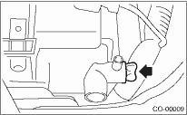
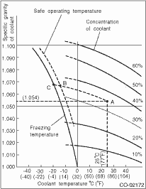

1. REPLACEMENT OF ENGINE COOLANT
WARNING:
The radiator is of the pressurized type. Do not attempt to remove the radiator cap immediately after the engine has been stopped.
1. Lift up the vehicle.
2. Remove the under cover.
3. Place a container under drain pipe.
4. Loosen and remove the drain plug to drain engine coolant into container.

5. For quick draining, remove the radiator cap.
CAUTION:
Be careful not to spill coolant on the floor.
6. Drain the coolant from reservoir tank.
7. Tighten the radiator drain plug securely after draining coolant.
8. Fill the engine coolant into radiator (Non-turbo model) or coolant filler tank (Turbo model) up to the filler neck position.
9. Fill engine coolant into the reservoir tank up to “FULL” level.

Coolant capacity (fill up to “FULL” level)
2.0 L non-turbo AT model:
Approx. 6.5 L (6.9 US qt, 5.7 Imp qt)
2.0 L non-turbo MT model:
Approx. 6.6 L (7.0 US qt, 5.8 Imp qt)
2.0 L non-turbo with ATF warmer model:
Approx. 6.9 L (7.3 US qt, 6.1 Imp qt)
2.0 L 2.5 L turbo AT model:
Approx. 7.3 L (7.7 US qt, 6.4 Imp qt)
2.0 L 2.5 L turbo MT model:
Approx. 7.4 L (7.8 US qt, 6.5 Imp qt)
2.5 L non-turbo AT model:
Approx. 6.8 L (7.2 US qt, 6.0 Imp qt)
2.5 L non-turbo MT model:
Approx. 6.9 L (7.3 US qt, 6.1 Imp qt)
NOTE:
The SUBARU Genuine Coolant containing anti-freeze and anti-rust agents is especially made for SUBARU engine, which has an aluminum crankcase. Always use SUBARU genuine coolant or equivalent non-amine type coolant, since other coolant may cause corrosion.
CAUTION:
Be careful not to spill the engine coolant on exhaust pipe to prevent it from emitting smoke or fire. If engine coolant adheres, wipe it off completely.
10. Close the radiator cap (on non-turbo models) or the coolant filler tank cap (on turbo models), start the engine and race 5 to 6 times at 3,000 rpm or less, then stop the engine. (Complete this operation within 40 seconds.)
11. Wait for one minute after the engine stops, then open the radiator cap (on non-turbo models) or the coolant filler tank cap (on turbo models). If the engine coolant level drops, add engine coolant into the radiator filler neck (on non-turbo models) or the coolant filler tank filler neck (on turbo models) up to the filler neck position.
12. Perform the procedures 10) and 11) again.
13. Properly install the radiator cap (Non-turbo model) or the coolant filler tank cap (Turbo model), and the reservoir tank cap.
14. Start the engine and operate the heater at maximum hot position and the blower speed setting to “LO”.
15. Run the engine at 2,000 rpm or less until radiator fan starts and stops.
NOTE:
• Be careful with the engine coolant temperature gauge to prevent overheating.
• If the radiator hose becomes harden by engine coolant pressure at this time, air purge seems to be mostly completed.
16. Stop the engine and wait until the engine coolant temperature lowers to 30°C (86°F) or less.
17. Open the radiator cap (on non-turbo models) or the coolant filler tank cap (on turbo models). If the engine coolant level drops, add engine coolant into the radiator filler neck (on non-turbo models) or the coolant filler tank filler neck (on turbo models) up to the filler neck position. Then, pour the coolant into reservoir tank up to “FULL” level.
18. Securely install the radiator cap (Non-turbo model) or the coolant filler tank cap (Turbo model), and the reservoir tank cap.
19. Set the heater setting to maximum hot position and the blower speed setting to “LO” and start the engine. Perform racing at 3,000 rpm or less. If the flowing sound is heard from heater core, repeat the procedures from step 15).
2. RELATIONSHIP OF SUBARU COOLANT CONCENTRATION AND FREEZING TEMPERATURE
The concentration and safe operating temperature of the SUBARU coolant is shown in the diagram. Measuring the temperature and specific gravity of the coolant will provide this information.
[Example]
If the coolant temperature is 25°C (77°F) and its specific gravity is 1.054, the concentration is 35% (point A), the safe operating temperature is −14°C (7°F) (point B), and the freezing temperature is −20°C (−4°F) (point C).

3. PROCEDURE TO ADJUST THE CONCENTRATION OF THE COOLANT
To adjust the concentration of coolant according to temperature, find the proper fluid concentration in the above diagram and replace the necessary amount of coolant with an undiluted solution of SUBARU genuine coolant (concentration 50%).
The amount of engine coolant that should be replaced can be determined using the diagram.
[Example]
Assume that the engine coolant concentration must be increased from 25% to 40%. Find point A, where the 25% line of engine coolant concentration intersects with the 40% curve of the necessary engine coolant concentration, and read the scale on the vertical axis of the graph at height A. The quantity of coolant to be drained is 2.1 L (2.2 US qt, 1.8 Imp qt). Drain 2.1 L (2.2 US qt, 1.8 Imp qt) of coolant from the cooling system and add 2.1 L (2.2 US qt, 1.8 Imp qt) of the undiluted solution of SUBARU coolant.
If a coolant concentration of 50% is needed, drain all the coolant and refill with the undiluted solution only.